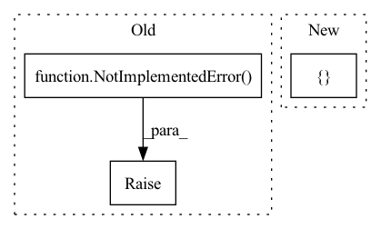

Pattern ID :1486
Before Change
elif mask_nonlinear == "softmax":
self.mask_nonlinear2d = nn.Softmax(dim=1)
else:
raise NotImplementedError( "")
self.take_log, self.take_db = take_log, take_db
self.eps = eps
After Change
self.rnn = nn.LSTM(n_bins, hidden_channels, num_layers=num_blocks, batch_first=True, bidirectional=bidirectional, dropout=dropout)
self.fc = nn.Linear(num_directions*hidden_channels, n_bins*embed_dim)
kwargs = {}
if mask_nonlinear == "softmax":
kwargs["dim"] = 1
In pattern: SUPERPATTERN
Frequency: 3
Non-data size: 3
Instances Fragment ID: 3976077
Project Name: tky823/dnn-based_source_separation
Commit Name: 6333394de0e49d076fa5e5f6d06d7f145ec8bcec
Time: 2021-11-22
Author: delta9guitar97@gmail.com
File Name: src/models/danet.py
M Class Name: DANet
N Class Name: DANet
M Method Name: __init__(11)
N Method Name: __init__(11)
M Parent Class: nn.Module
N Parent Class: nn.Module
M File Name: src/models/danet.py
N File Name: src/models/danet.py
M Start Line: 48
M End Line: 55
N Start Line: 49
N End Line: 54
Before Change
super().__init__()
raise NotImplementedError()
def forward(self, input):
After Change
self.dense_block = ControlStackedDenseBlock(channels, nonlinear=nonlinear, dropout=dropout, norm=norm)
weights, biases = [], []
for _channels in out_channels:
weights.append(nn.Linear(channels[-1], _channels))
biases.append(nn.Linear(channels[-1], _channels)) Fragment ID: 3976078
Project Name: tky823/dnn-based_source_separation
Commit Name: ef24a393e941b1563617f711a1438b31488a1df3
Time: 2021-06-08
Author: 40362510+tky823@users.noreply.github.com
File Name: src/models/cunet.py
M Class Name: ControlDenseNet
N Class Name: ControlDenseNet
M Method Name: __init__(6)
N Method Name: __init__(10)
M Parent Class: nn.Module
N Parent Class: nn.Module
M File Name: src/models/cunet.py
N File Name: src/models/cunet.py
M Start Line: 329
M End Line: 336
N Start Line: 336
N End Line: 347
Before Change
else:
self.state_dim = full_obs_space["state"].shape
if len(self.state_dim) > 1: // env return a 3D global state
raise NotImplementedError()
else:
cc_layers = []
cc_input_dim = full_obs_space["state"].shape[0]
for i in range(custom_config["model_arch_args"]["fc_layer"]):After Change
*cc_layers
)
else:
cc_layers = []
cc_input_dim = full_obs_space["state"].shape[0]
for i in range(custom_config["model_arch_args"]["fc_layer"]):
cc_out_dim = custom_config["model_arch_args"]["out_dim_fc_{}".format(i)]
cc_fc_layer = nn.Linear(cc_input_dim, cc_out_dim) Fragment ID: 3976079
Project Name: replicable-marl/marllib
Commit Name: 8a2592aa280d852fc4fcb0a4d5891924b2ae3b5c
Time: 2022-04-28
Author: hhhusiyi@163.com
File Name: CC/models/onpolicy_rnn.py
M Class Name: Onpolicy_Universal_Model
N Class Name: Onpolicy_Universal_Model
M Method Name: __init__(6)
N Method Name: __init__(6)
M Parent Class: TorchRNN,nn.Module
N Parent Class: TorchRNN,nn.Module
M File Name: CC/models/onpolicy_rnn.py
N File Name: CC/models/onpolicy_rnn.py
M Start Line: 81
M End Line: 116
N Start Line: 33
N End Line: 141